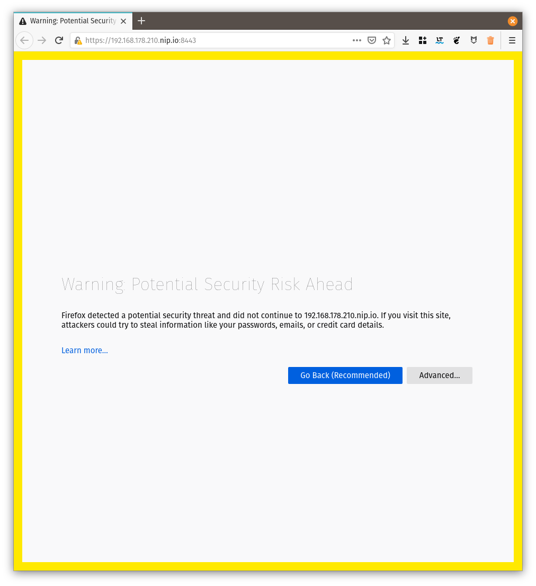
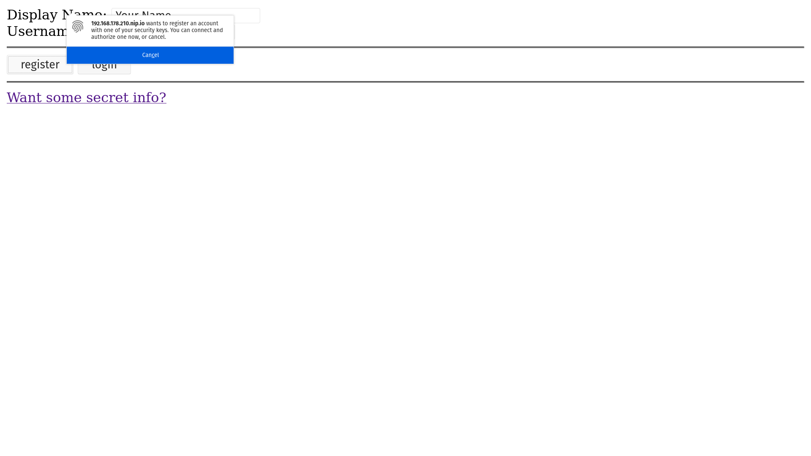
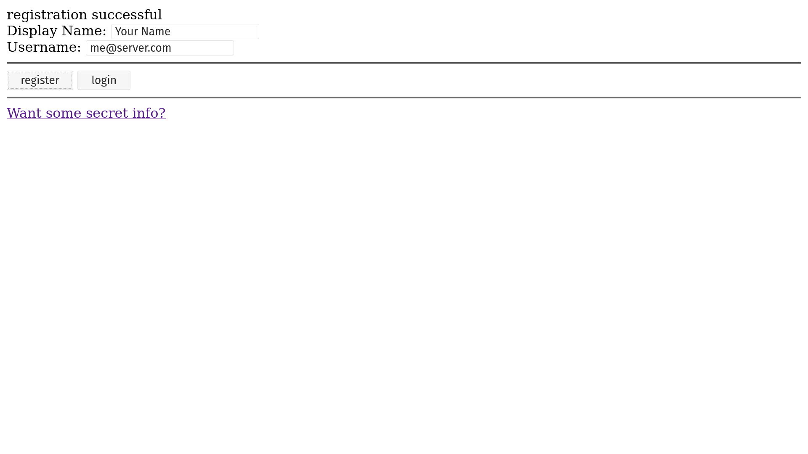
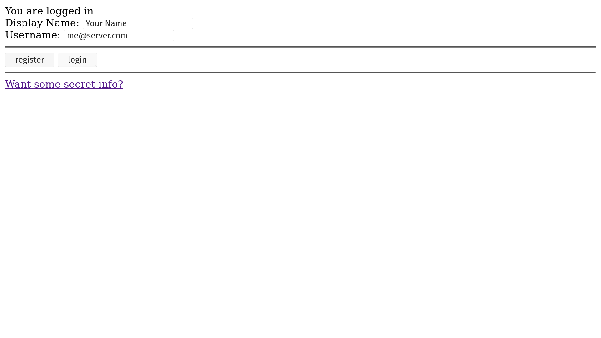

Vert.x FIDO2 webauthn for web applications
Table of Contents
This how to will show you how to build and secure a simple FIDO2 CONFORMANT (commonly known as Web Authentication API) vert.x web application. The Web Authentication API (also known as WebAuthn) is a specification written by the W3C and FIDO Alliance, with the participation of Google, Mozilla, Microsoft, Yubico, and others. The API allows servers to register and authenticate users using public key cryptography instead of a password.
What you will build
By the end of this how-to, you will have a working application that requires or stores passwords to perform authentication. This will be achieved with WebAuthn, which is a new W3C global standard for secure authentication on the Web supported by all leading browsers and platforms.
What you need
-
A text editor or IDE
-
Java 8 or higher (11 or >=15 recommended for the extra security algorithms)
-
Internet access
Create a project
Security first
Web Authentication API is a secure API and vendors decided to follow the best practices. While you can build a server without using SSL, modern web browsers will not connect or allow the usage of the webauthn APIs with servers not using SSL, even during development.
Before we can start using webauthn we will need to ensure that even our development application is SSL ready. For this we need to create a valid SSL certificate. Do note that self signed certificates are still allowed:
To create a self-signed certificate for your IP address do the following:
export IP=10.0.0.2
export CERTSTORE_SECRET=password # (1)
keytool \
-genkeypair \
-alias rsakey \
-keyalg rsa \
-storepass ${CERTSTORE_SECRET} \
-keystore certstore.jks \
-storetype JKS \
-dname "CN=${IP}.nip.io,O=Vert.x Development" # (2)-
Don’t use this password!
-
replace the CN with your own IP address (other than localhost) with suffix
.nip.io
For this setup we’re relying on a free DNS server that returns your IP address when queried. Other services exist in the web that provide the same results, for example:
At this moment we have a SSL certificate, however the format is considered deprecated for modern Java versions, so we need a second step to convert it to PKCS#12:
keytool \
-importkeystore \
-srckeystore certstore.jks \
-destkeystore certstore.jks \
-deststoretype pkcs12Your new SSL certificate is on the file certstore.jks.
Registration Flow
Before being able to login to your application we will need to register an FIDO2 authenticator. This process is similar to a "sign-up" flow in web application. There are however a few differences that this diagram tries to illustrate:

-
User registers using just a username
-
Your server (Relying Party) creates a secure challenge
-
The browser will pass this information to the token device
-
The token generates a new key pair for this information
-
The challenge is signed and returned to the server (RP)
-
The server verifies that the challenge is correct and stores the public key
Authentication Flow

-
User authenticates using just a username
-
Your server (Relying Party) creates a secure challenge
-
The browser will pass this information to the token device
-
The token generates verifies the credential and signs the challenge
-
The browser creates an authentication assertion
-
The server verifies that the assertion is correct and allows the user
Writing the server code
Handling Authenticator Objects
You can find the full source code here, for now let’s just cover important parts.
In order to have some working registration and authentication we need to be able to store and query authenticator data. For this we need to provide a few functions that do exactly this job. You can check it’s source code here. In your verticle you start by creating this object as:
// Dummy database, real world workloads
// use a persistent store or course!
InMemoryStore database = new InMemoryStore();Configure the Webauthn Object
In order to use FIDO2 we need to configure how the authentication provider shall work. For this we need to create and configure an WebAuthn object:
// create the webauthn security object
WebAuthn webAuthN = WebAuthn.create(
vertx,
new WebAuthnOptions() // (1)
.setRelyingParty(new RelyingParty()
.setName("Vert.x FIDO2/webauthn Howto"))
.setUserVerification(UserVerification.DISCOURAGED) // (2)
.setAttestation(Attestation.NONE) // (3)
.setRequireResidentKey(false) // (4)
.setChallengeLength(64) // (5)
.addPubKeyCredParam(PublicKeyCredential.ES256) // (6)
.addPubKeyCredParam(PublicKeyCredential.RS256)
.addTransport(AuthenticatorTransport.USB) // (7)
.addTransport(AuthenticatorTransport.NFC)
.addTransport(AuthenticatorTransport.BLE)
.addTransport(AuthenticatorTransport.INTERNAL))
// where to load/update authenticators data
.authenticatorFetcher(database::fetcher)
.authenticatorUpdater(database::updater);-
All configuration happens in the
WebAuthnOptions. This is just a small example of sensible defaults, consult the javadocs for even more options. -
When verifying users we do not really require then to be verified.
-
During registration we don’t want to attest the hardware.
-
We don’t need resident keys for users to authenticate.
-
Define the length of a challenge, the minimum is
32. -
Which security algorithms do we accept.
-
What kind of transports do we allow from the browser to the authenticator.
Web router initialization
Let’s start configuring our HTTP routes to be secure. Before you can use FIDO2 there are a few handlers that ALWAYS need to be in place:
-
BodyHandler
-
SessionHandler
It is also recommended to have StaticHandler because the whole process requires both vert.x code (the one we’re currently exploring) and a small helper JavaScript script. To simplify development such helper is also provided by vert.x just by using a maven dependency:
<dependencies>
<dependency>
<groupId>io.vertx</groupId>
<artifactId>vertx-web</artifactId>
</dependency>
<dependency>
<groupId>io.vertx</groupId>
<artifactId>vertx-auth-webauthn</artifactId>
</dependency>
<dependency> <!--(1)-->
<groupId>io.vertx</groupId>
<artifactId>vertx-auth-webauthn</artifactId>
<version>${vertx.version}</version>
<classifier>client</classifier>
<type>js</type>
</dependency>
</dependencies>-
Provided simple helper script to interact with the vert.x backend.
Now we can initialize the web router as:
final Router app = Router.router(vertx);
app.route() // (1)
.handler(StaticHandler.create());
app.post() // (2)
.handler(BodyHandler.create());
app.route() // (3)
.handler(SessionHandler
.create(LocalSessionStore.create(vertx)));
WebAuthnHandler webAuthnHandler = WebAuthnHandler.create(webAuthN) // (4)
.setOrigin(String.format("https://%s.nip.io:8443", System.getenv("IP")))
// required callback
.setupCallback(app.post("/webauthn/callback"))
// optional register callback
.setupCredentialsCreateCallback(app.post("/webauthn/register"))
// optional login callback
.setupCredentialsGetCallback(app.post("/webauthn/login"));
app.route()
.handler(webAuthnHandler);
app.route("/protected") // (5)
.handler(ctx ->
ctx.response()
.end(
"FIDO2 is Awesome!\n" +
"No Password phishing here!\n"));-
Serve the client side application (more on this later).
-
Enable parsing of POST request body.
-
Enable sessions.
-
Mount the webauthn handler using the config defined previously.
-
Example secure route.
Server boostrap
Now that we have a minimal router we need to create a HTTPS server. Note that this is a required step and the reason why we created a self-signed certificate and use a custom domain name for our development environment.
vertx.createHttpServer(
new HttpServerOptions()
.setSsl(true)
.setKeyStoreOptions(
new JksOptions()
.setPath("certstore.jks")
.setPassword(System.getenv("CERTSTORE_SECRET"))))
.requestHandler(app)
.listen(8443, "0.0.0.0")
.onSuccess(v -> {
System.out.printf("Server: https://%s.nip.io:8443%n", System.getenv("IP"));
start.complete();
})
.onFailure(start::fail);At this moment our backend application is complete and the route /protected shall be secure by FIDO2. Running the application as:
IP=10.0.0.2 \
mvn exec:java
# The following line should be present in your console:
# Server listening at: https://10.0.0.2.nip.io:8443It is normal that your browser will given you an warning about the self-signed certificate:

This is for your protection. In a real world application you should use a proper SSL certificate such as the ones issued by let’s encrypt.
Navigating with your browser to: https://10.0.0.2.nip.io:8443/protected should render a Forbidden error. The next step is to create a minimal login and registration web application.
Writing the client code
For the client application, no framework is going to be used in order to show that the script can be used with any framework or without.
We will create a minimal HTML page with 3 sections:
-
a form where users can register or login by just entering their:
-
Display Name: For example a user friendly name such as "John Doe"
-
Username: An unique username such as "john.doe@mail.com"
-
-
Buttons to register and login
-
A link to the protected resource, only after register AND login should be allowed.
<!DOCTYPE html>
<html lang="en">
<head>
<meta charset="utf-8"/>
<title>WebAuthn Howto</title>
</head>
<body>
<noscript>You need to enable JavaScript to run this app.</noscript>
<div id="message"></div>
<div> <!--(1)-->
<label for="displayName">Display Name: </label>
<input id="displayName" name="displayName" type="text" value="Your Name"><br/>
<label for="username">Username: </label>
<input id="username" name="username" type="email" value="me@server.com">
</div>
<hr>
<div> <!--(2)-->
<button id="register">register</button>
<button id="login">login</button>
</div>
<hr>
<div> <!--(3)-->
<a href="/protected">Want some secret info?</a>
</div>
<script src="vertx-auth-webauthn-client.js"></script> <!--(4)-->
<script src="main.js"></script> <!--(5)-->
</body>
</html>-
The first section as described above.
-
The second section as described above.
-
The third section as described above.
-
Helper script added to the project dependencies
-
Your application script
The client script code
You can check the full script here. Let’s just cover the important sections.
The included script vertx-auth-webauthn-client.js defines a global type WebAuthn. The first step is to create an instance of this object and configure it to match our backend configuration:
const webAuthn = new WebAuthn({
callbackPath: '/webauthn/callback',
registerPath: '/webauthn/register',
loginPath: '/webauthn/login'
});The configuration should be straightforward, only define the paths that match your backend routes.
Next we need to add event handlers to our buttons. We start with the register action:
registerButton.onclick = () => {
webAuthn
.register({
name: document.getElementById('username').value,
displayName: document.getElementById('displayName').value
})
.then(() => {
displayMessage('registration successful');
})
.catch(err => {
displayMessage('registration failed');
console.error(err);
});
};The onclick event will just use the Webauthn object. The webauthn object has only 2 method and it’s Promise based to it should not be hard to grasp for vert.x users. If you’re mainly a Java vert.x developer, just think of a JavaScript Promise as a vert.x Future and everything should be very similar.
To register a user there are just 2 required properties:
-
namethe unique username, for example, an email address. -
displayNamea human friendly text description, for example, your first and last name.
Filling the form and clicking the register button, the user should be presented with a popup asking to authorize the registration:

After you touch your authenticator the flow should complete successfully with:

At this moment you can close your browser or even open a different one. The sign-up process is complete so you can now login from anywhere with your token.
We now need to handle the onclick event for the login button:
loginButton.onclick = () => {
webAuthn
.login({
name: document.getElementById('username').value
})
.then(() => {
displayMessage('You are logged in');
})
.catch(err => {
displayMessage('Invalid credential');
console.error(err);
});
};Like the FIDO2 describes, using webauthn is a passwordless authentication, so the only required field to perform the login is:
-
namethe unique username, for example, an email address.
Just like in the registration screen a popup will be presented telling you that there is an intent to login and asks the user for authorization. When you touch your authenticator you can see:

Now that you’re logged in, you can finally try to see the secret info link, which shall give your something like:
Summary
In this how-to we covered:
-
Creating a web project
-
Secure a web application with Webauthn
-
Write the client side code with the help of webauthn-client.js
I hope you now can use FIDO2/webauthn on your next project!
Last published: 2021-07-11 00:58:38 +0000.